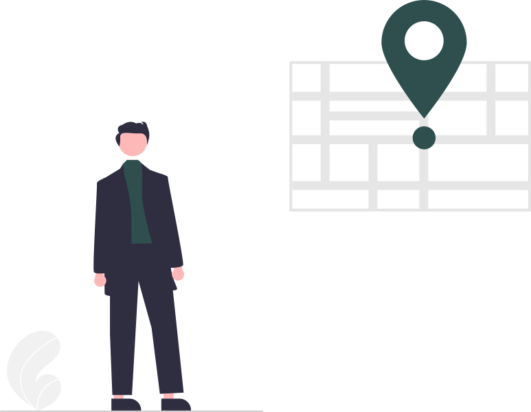

Clinica stomatologica
en -> /Activitatea stomatologica se desfasoara in conditii de siguranta maxima pentru pacienti si pentru personalul clinicii.
Luni - Sambata
Bucuresti, sectorul 2, Soseaua Andronache 52-54
dentalmarimar2022@yahoo.com
Urgentele Stomatologice sunt rezolvate in timpul programului de lucru dar si cu programare telefonica
0737859988
